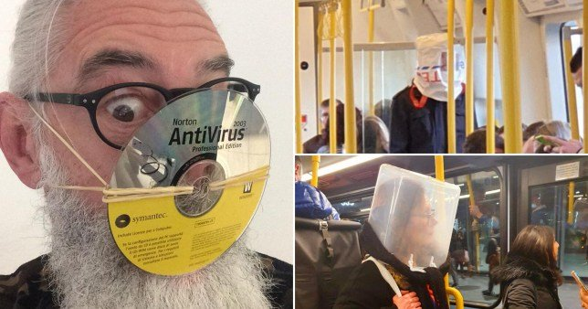

Le projet réalisé durant ces vacances a pour but de montrer l'évolution du COVID-19 en Europe
Afin de mettre en place une carte intéractive montrant la propagation de ce virus, j'ai utilisé des bases de Donnés trouvées sur data.gouv.fr
Table de donné VIRUS<-/->Table de donné GPS
La première table renferme des donnés sur le covid-19 (infectés, morts,guérisons...) sur 3 mois de presque tous les pays du monde
La seconde table renferme des donnés GPS de tous les pays d'Europe
J'ai voulus réaliser une carte claire avec des marker sur chaque pays représentant le drapeau de ceux ci renfermant un graphique montrant l'évolution du nombre de personne infectés par ce virus. Le choix du nombre d'infectés a été choisi car c'est la donnés la plus représentative de la progrétion du virus dans l'europe
J'ai rencontré quelques problèmes, lors de la jointure de mes tableau, j'ai mis du temps a comprendre que les séparateur n'était pas les bon alors je les ai imposé au 2 tables.
Cette carte permet de répondre a 3 questions:
Comment évolue le COVID-19 en Europe?
Grâce aux graphiques on constate que l'évolution de corona virus en Europe ne cesse d'augmenter dans tous les pays constituant ce continant
Quels sont les pays les plus touchés?
Grâce à la taille des markers on voit directement les pays les plus infecté par ce virus. L'Espagne avec plus de 220 000 infecté suivit de l'Italie arrivant presque la la barre des 200 000 inféctés et juste devant la France et l'allemagne avec 160000 infectés
Est ce que le pic d'infécté est t'il atteind dans tous les pays d'Europe
On constate aucun pique atteind cependant on observe des pays dont le nombre d'inectés commence a ce réduire comme Chypre ou Malte. Mais on constate des pays comme la Suède où le nombre d'infecté ne cesse d'augmenté
Afin de réaliser cette carte, il m'a fallu créer un code, composé de 4 grandes parties:
Afin de créer une carte j'ai tous simplement importer la bibliotheque folium et j'ai créé une carte, j'ai choisit de prendre des coordonnés GPS au centre de l'Europe et j'ai adapté le zoom afin d'avoir une vision glmobale sur l'Europe
Et j'ai enrengistré cette carte sur un fichier HTML
Afin de rendre ma carte interactive, j'ai choisis de placer des markers pour chaque pays, afin que l'orsque l'on clique dessus, apparaisse un graphique m'ontrant l'évolution du virus
Utilisation de "tooltip"afin de rendre le carte plus interractive (lorsque que la souris passe sur le marker, la variable enrengistrer dedans apparait
J'ai décidé de mettre le drapeau du pays où est le marker enrengistrer dans des variables logo(+NomDuPays) qui est enregstrer dans la variable "icon". La tailles des logos présent sur la carte sont en fonction du nombre d'infectés dans le pays
Pour que la carte nous apprenne autre chose que les drapeaux des pays d'Europe, j'ai mis des graphique représentant la propagation du COVID-19 dans chaque pays d'Europe, avec en abscisse les dates et en ordonné le nombre d'infectés
Grâce à ce projet il est donc claire que le covid-19 infecte de plus en plus de personnes, il est donc tres important de ce proteger
Lien index